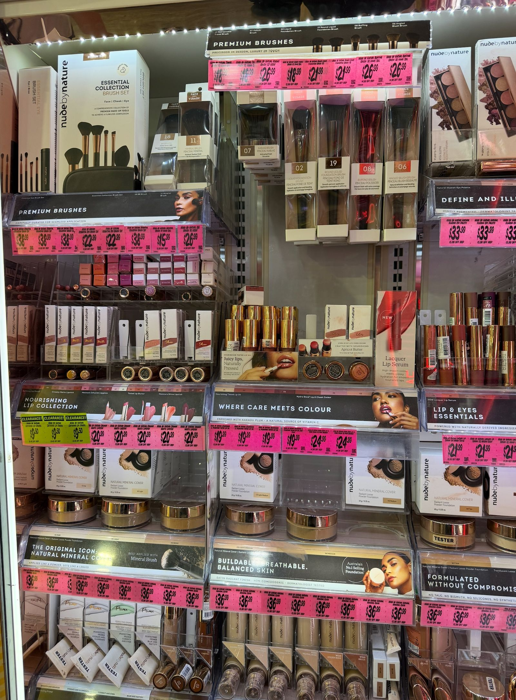
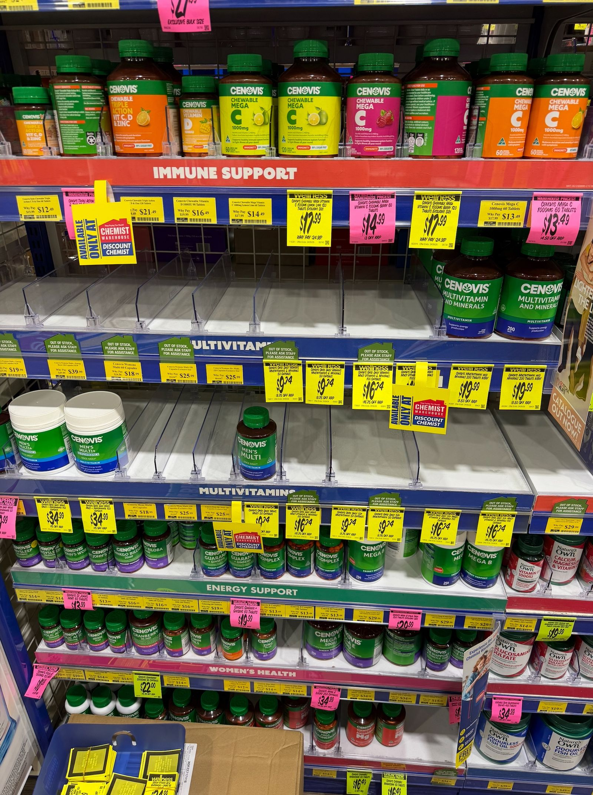
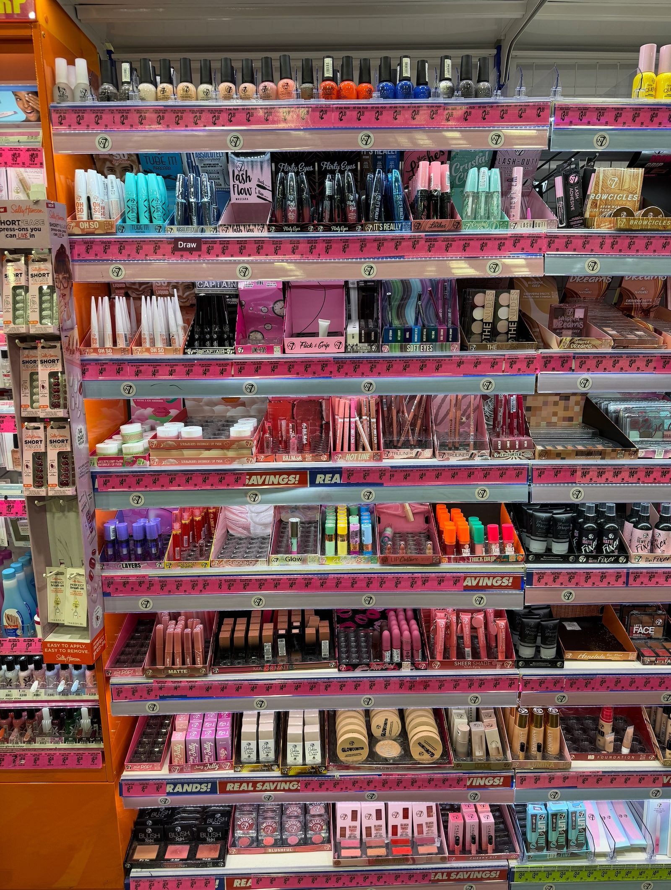
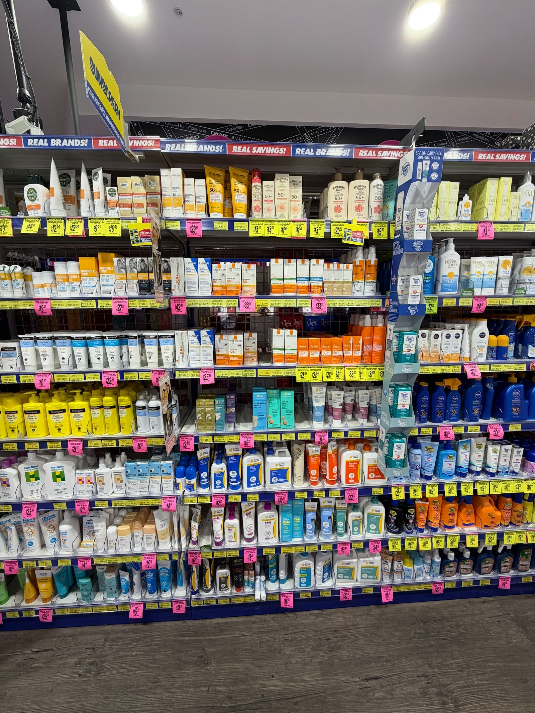

RETAIL OPERATIONS FDE · POC 01
MAKE THE
PHYSICAL STORE
ACTIONABLE.
A field-deployed product exploration for turning what happens on the shelf into the next useful action for a store team.
See the operating loopTHE OPERATING GAP
01
The shelf, the instruction and the evidence should be part of the same operating loop.
A store manager needs to see what requires attention, understand where it is, turn an instruction into focused work, and know what evidence is enough to close it. Those moments are usually split across walk-throughs, documents and follow-up.
This FDE explores a practical alternative: connect physical context to area-based action, then make exceptions and proof visible without asking the team to manage another abstract dashboard.

ONE OPERATING LOOP
Observe the work.
Make the next move obvious.
- 01Observe
Use the physical store and approved retail imagery as context.
- 02Prioritise
Make areas, gaps and exceptions easier to see.
- 03Act
Translate instructions into the few actions relevant now.
- 04Verify
Route proof and uncertainty to the right review point.

REAL RETAIL-BAY CONTEXT · NO PATIENT OR STAFF DATA
01 · DIGITAL STORE
See the store as it is — not as a spreadsheet says it should be.
Digital Store is a responsive stock-management dashboard proof of concept. It brings a store map, retail-bay imagery and simulated vision-style findings together to focus attention on physical shelf gaps and planogram drift.
- PHYSICAL CONTEXT
- Start with the bay, not a detached report.
- AREA PRIORITY
- Use a store map to make attention areas glanceable.
- FUTURE PATH
- Connect approved imagery to a non-clinical review workflow.
POC note: live metrics, findings and staffing data in the current demo are simulated. Data capture is out of scope.
02 · DOCUMENT COMPLIANCE
Turn a head-office document into area work a team can finish.
Document Compliance is a mobile-first run-sheet proof of concept. It reframes a monthly compliance calendar as area-based tasks, with the action, proof requirement and manager-review state in the same place.
Non-clinical only. The concept excludes patient information, prescription labels, queues and clinical decision-making.
INSTRUCTIONRead once. Act by area.
DISPLAYProof requiredOPEN
CAPTUREDManager exception queueREADY
FIELD PROOF
03
The value is not digitising a document or counting a shelf. It is reducing the distance between signal and action.
These two product concepts can stand alone. Together, they illustrate an FDE approach: work alongside real operations, use only the evidence that is appropriate for the setting, and ship a workflow the people closest to the work can understand.

SCOPE BOUNDARY
A prototype should make the next question sharper.
This is an independent portfolio proof of concept, not an official Chemist Warehouse product, partnership announcement or production deployment. It uses non-sensitive retail reference imagery and simulated operational states to test how a store team could move from observation to action with less friction.
Back to top